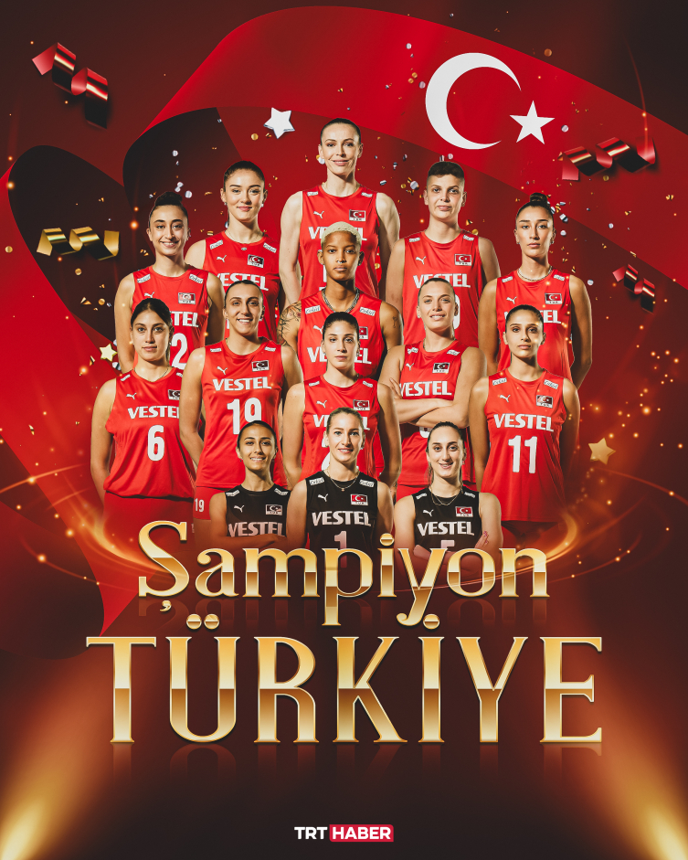

Takımın Kısa Tarihçesi
Türkiye Kadın Voleybol Milli Takımı, 1950’lerden bu yana uluslararası arenada yer almaktadır. 2003 yılında Avrupa Şampiyonası'ndaki gümüş madalya ile büyük çıkış yapan takım, son yıllarda Milletler Ligi ve Avrupa Şampiyonası'nda kazandığı madalyalarla "Filenin Sultanları" adıyla tanındı. 2023 yılında hem Avrupa hem de Milletler Ligi şampiyonlukları kazanarak tarihi bir başarıya imza atmıştır.
Takım, genç ve deneyimli oyuncuların birleşimiyle dünya sıralamasında zirveyi zorlamakta ve voleybolun Türkiye’deki en başarılı branşlarından biri olarak dikkat çekmektedir.
